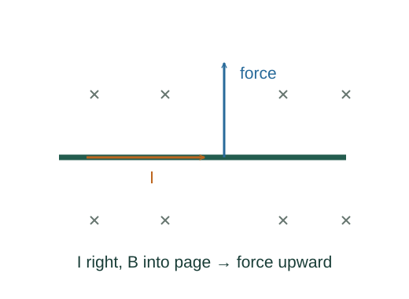

Derive force and torque on a current loop
A current consists of moving charge, so the magnetic force on its carriers becomes a force on the conductor. Opposite sides of a loop can form a turning couple.
What the symbols mean
I: conventional current; d𝐥: wire element along current; N: loop turns; A: one turn’s area; 𝛍: magnetic dipole moment normal by the right-hand rule.
When this applies
Thin wire in a prescribed magnetic field. The simple dipole torque formula uses a uniform field and a planar loop.
Developing the argument

Add carrier forces in a segment
For carrier density n, charge q and segment volume Awdℓ, the total force is nqAwdℓ 𝐯d × 𝐁. Recognize current I = nqAwvd with its conventional direction.
A closer lookDerive current from carrier drift ↗Evaluate a straight segment
When field and wire direction are constant, integrate d𝐥 to the length vector. The cross product makes parallel segments feel no magnetic force.
Find the turning couple of a rectangular loop
For loop sides a and b and normal tilted by θ from the field, opposite forces on the relevant sides have magnitude IaB and perpendicular separation b sin θ.
Define the magnetic moment
Summing N identical turns multiplies torque by N. Assign the loop moment along the right-hand normal and write the vector law. Its energy is minimized when aligned.
A worked example
A 20-turn loop of area 0.010 m² carrying 0.50 A has μ = 0.10 A·m². In a 0.20 T field its maximum torque is 0.020 N·m.
Derivation behind this calculation ↗A point to keep straight
A closed loop in a uniform field has zero net force, yet may have nonzero torque. Nonuniform fields can also exert a net force.
Check the assumptions and derivation ↗